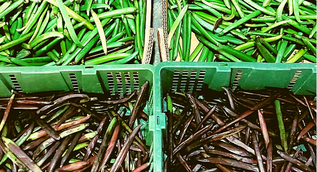
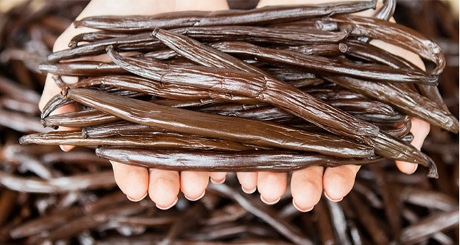
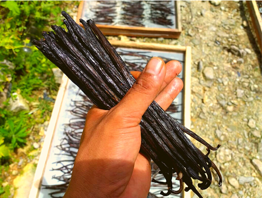
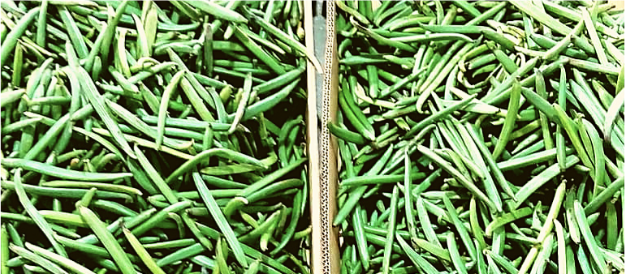
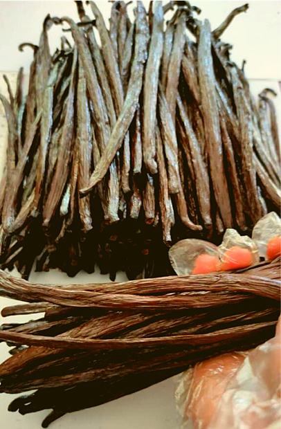
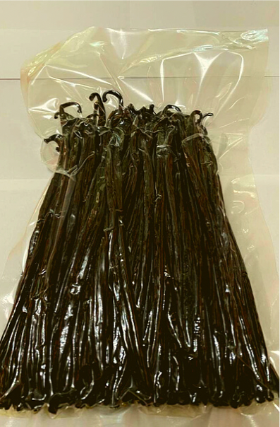

製品紹介
Indonesian Vanilla Beans インドネシア産 バニラビーンズ
Vanilla Studios
私はたちはインドネシア産オーガニックバニラビーンズの生産、加工、販売に専念するバニラブランドVanilla studiosを立ち上げました。 弊社では日本では珍しい使用用途に応じて、使用するバニラビーンズを使い分けが可能な、３種類のオーガニックバニラを揃えております。
Planifolia


グレードA / 水分量15-20% / ブラウン
インドネシアのプラニフォリアバニラは甘くてクリーミーかつ、特徴的な土のような木のような後味ももっています。濃い風味かつ、ほのかにフルーティーな風味です。 チョコレートやキャラメルなど強い風味の中でも存在感が失われることはありません。プラニフォリアバニラを加えることで全てのデザートをより洗練された味へと変えることができます。
Tahitian


グレードA / 水分量15-20% / ブラウン
インドネシアのタヒチアンバニラはふっくらとしており、ブルボンバニラよりもオイルと水分を多く含みます。その香りは華やかでフルーティでなめらかです。例えるならばサクランボやリコリス、ワインの様な香りです。 タヒチアンバニラはどんな材料とも相性が良いので洋菓子屋さんのシェフに好んで使われています。
Gourmet

